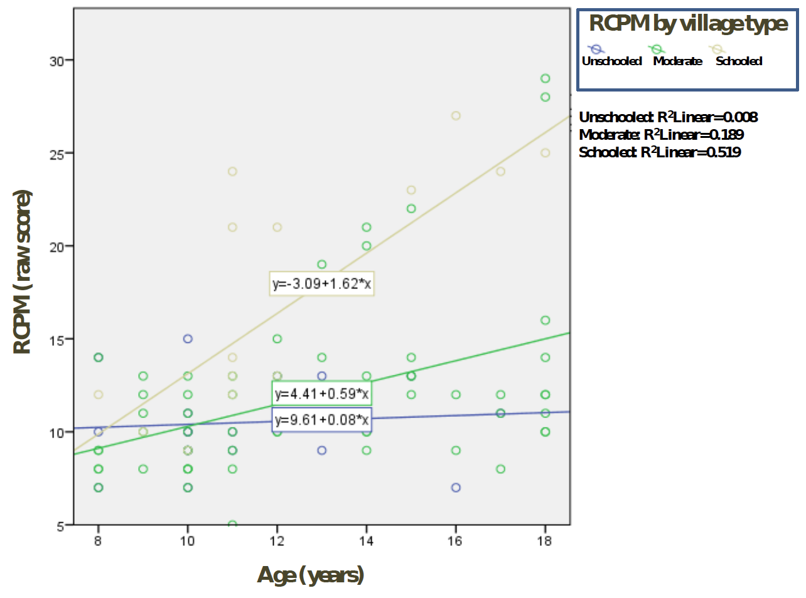

Unit 14: induction, general intelligence, and IQ

the agenda
-
the Induction Problem (and a very general Bayesian approach):
-
How does abstract knowledge guide learning and reasoning from sparse
data?
-
What forms does our knowledge take, across different domains and
tasks?
-
How is that abstract knowledge itself acquired?
-
general intelligence and IQ
INDUCTION in general: reasoned knowledge from evidence
Modes of reasoning —
- deduction: from premises to consequences [logical]
- abduction: from a single case to a likely
explanation (which cause/rule is responsible for this case?) [statistical]
- induction: from multiple cases to a
general rule (what rule can unify all these cases?) [statistical]
(given) Chimps are susceptible to the disease blicketitis.
(given) Squirrels are susceptible to the disease blicketitis.
————
(true or false?) Horses are susceptible to the disease blicketitis.
main characteristics of induction in humans: note the role of STATISTICS
Inferences from single cases:
1. Similarity between premise and conclusion categories promotes
induction.
2. Typicality of the premise category promotes induction.
3. Homogeneity of the conclusion category promotes induction.
Inferences from multiple cases:
4. Greater number of observations, or premises, promotes induction.
5. Greater diversity of observations, or premises, promotes induction.
Influence of properties (context):
6. People draw inferences differently depending on the property being
projected.
7. Some properties are idiosyncratic or transient, with a
narrow scope for inferences, whereas other properties are more
broadly projected.
8. The assessment of similarity between categories in an
argument depends on the property being projected (cf. the "ball, moon,
candle" example).
testing a Bayesian model of category induction (Sanjana & Tenenbaum, 2002)

(given) Chimps are susceptible to the disease blicketitis.
(given) Squirrels are susceptible to the disease blicketitis.
(true or false?) Horses are susceptible to the disease blicketitis.
Below: the assumed representation of the structure of
similarities among animals, based on similarity judgments made by subjects
in a separate norming study.
Right: correlations between the behavior of the Bayesian
model and of the human subjects, in three versions of the induction task (n
indicates the number of premise examples).

induction means going from episodic data to conceptual knowledge

Children learning names for object concepts routinely make strong
generalizations from just a few examples. The same processes of rapid
generalization can be studied in adults learning names for novel objects
created with computer graphics.
Here, given these alien objects and three examples (boxed in red) of "tufas" (a word in the alien language), which
other objects are tufas? Almost everyone selects just the objects boxed in
gray.
How to Grow a Mind: Statistics, Structure, and Abstraction,
J. B. Tenenbaum et al., Science 331:1279 (2011).
[EXTRA] a reminder: weighing statistical evidence using Bayes
d — the observed data;
h — the hypothesis in question;
H — the space of all possible hypotheses (which may be
intricately structured).
How to Grow a Mind: Statistics, Structure, and Abstraction,
J. B. Tenenbaum et al., Science 331:1279 (2011).
[EXTRA] induction: it's STRUCTURED statistics (Tenenbaum et al., 2011)

Learning names for categories can be modeled as Bayesian inference
over a tree-structured domain representation. Objects are
placed at the leaves of the tree; hypotheses about categories that
words could label correspond to different nodes. Nodes at
different depths pick out hypotheses at different levels of
generality (e.g., Clydesdales, draft horses, horses, animals, or
living things).
Priors [on category labels] favor higher-placed nodes and
coherent categories.
Likelihoods [of images, given labels] assume that examples
are drawn randomly from the node labeled by the word, favoring
lower nodes that cover the examples tightly. (This captures the
sense of
suspicious coincidence: it would
be very improbable — suspicious — for all examples of a word to
cluster under the same lower branch of the tree if the word
actually labels a high node.)
Posterior probabilities [of labels, given images] are
computed by combining priors and likelihoods; the results favor
generalizing across the lowest distinctive branch that spans all
the observed examples (boxed in gray).

[EXTRA] induction: it's STRUCTURED statistics
A search algorithm attempts to find both the form \(F\) (dictated
by the abstract principles) and the structure \(S\) of that form
that jointly maximize \(P(S,F\mid D)\), the posterior probability
of the structure and form, given data \(D\). That posterior is a
function of the product of \(P(D\mid S)\) and \(P(S\mid F)\).
In this example, the algorithm is given as data the features of
animals; it then finds a tree structure with intuitively sensible
categories at multiple scales.
[For examples of structures other than trees, see the next slide.]
How to Grow a Mind: Statistics, Structure, and Abstraction,
J. B. Tenenbaum et al., Science 331:1279 (2011).

[EXTRA] induction: it's STRUCTURED statistics
A search algorithm attempts to find both the form \(F\) (dictated
by the abstract principles) and the structure \(S\) of that form
that jointly maximize \(P(S,F\mid D)\), the posterior probability
of the structure and form, given data \(D\). That posterior is a
function of the product of \(P(D\mid S)\) and \(P(S\mid F)\).
| problem setting | form |
| (A) | animal species taxonomy | tree |
| (B) | SCOTUS conservative/liberal | chain |
| (C) | color similarity | ring |
| (D) | latitude/longitude | ring \(\times\) chain |
| (E) | morphed face images, 2 parameters | chain \(\times\) chain |
How to Grow a Mind: Statistics, Structure, and Abstraction,
J. B. Tenenbaum et al., Science 331:1279 (2011).
[EXTRA: causal induction — it's STRUCTURED statistics]
A Hierarchical Bayesian model for learning an abstract theory of
causality.
At the highest level are laws expressed in first-order logic
representing the abstract properties of causal relationships, the role of
exogenous interventions in defining the direction of causality, and
features that may mark an event as an exogenous intervention. These laws
place constraints on possible directed graphical models at the level
below, which in turn are used to explain patterns of observed events over
variables. Given observed events from several different causal systems,
each encoded in a distinct data matrix, and a hypothesis space of possible
laws at the highest level, the model converges quickly on a correct theory
of intervention-based causality and uses that theory to constrain
inferences about the specific causal networks underlying the different
systems at the level below.
How to Grow a Mind: Statistics, Structure, and Abstraction,
J. B. Tenenbaum et al., Science 331:1279 (2011).
general fluid intelligence (gF, a.k.a. IQ)

- The structure of [correlations among subjects' performance in] intelligence [tests]
- General fluid intelligence (gF)
- gF, working memory, and analogy problems
- Practical implications of gF
- gF in non-human animals
"General
intelligence," objectively determined and measured,
C. Spearman, American Journal of Psychology 15:201-293 (1904).
some tests of general intelligence

Four examples of general intelligence tests, from a Scientific American article by L. Gottfredson
(1998).
Performance in such tests is tightly correlated: a subject who does well
on one is likely to do well also on others.
The usual degree of correlation between scores in such tasks — about
0.75 — implies that about 50% of the
variance in subjects' performance is explained (through factor analysis) by positing the existence of
a common general intelligence factor, gF.
the structure of intelligence, as revealed by factor
analysis [see textbook, p.366]
on the value of the three-stratum model
"This so-called three-stratum model affords freedom from otiose arguments
about being 'for or against the general factor.'
The three-stratum account has been called a theory. It is not.
And it is not a model of the human cognitive architecture: rather,
it is a taxonomy or model of test variances and co-variances. The taxonomy
does not explain human intelligence differences, it describes them."
Human intelligence differences: a recent history, I. J. Deary,
Trends in Cognitive Sciences 5:127-130 (2001).
is the general intelligence factor relevant to real life?
From the Scientific American article by L. Gottfredson
(1998):
... Is there indeed a general mental ability we commonly
call "intelligence," and is it important in the practical affairs of
life? The answer, based on decades of intelligence research, is an
unequivocal yes.
... No matter their form or content, tests of mental skills invariably
point to the existence of a global factor that permeates all
aspects of cognition. And this factor seems to have considerable
influence on a person's practical quality of life. Intelligence as
measured by IQ tests is the single most effective predictor known of
individual performance at school and on the job.
... The effects of environment on intelligence fade rather than
grow with time.
general intelligence and real life (from Gottfredson, 1998)

Correlation of IQ Scores with occupational achievement suggests that
gF reflects an ability to deal with
cognitive
complexity.
general intelligence and real life
Scores also correlate with some social outcomes (% young white adults in the US).
general intelligence and real life

Scores also correlate with some social outcomes (% young white adults in the US).
general intelligence and real life

Scores also correlate with some social outcomes (% young white adults in the US).
general intelligence and real life

Scores also correlate with some social outcomes (% young white adults in the US).
general intelligence and real life
"Turning to [NALS] Level 5, these two items require using tables of information. The
first one requires determining the cost of carpet for a room and the second
involves comparing the merits of two credit cards. Only 4% of white adults
in the United States routinely function at this level. If these tasks do
not seem difficult to the reader, it is because the reader is used to
operating at this cognitive level. Most people cannot."
Gottfredson, Linda S. (2004). Life, Death, and Intelligence. Journal of
Cognitive Education and Psychology [online], 4, 1, 23-46.
NOW, what functional building blocks could underlie general intelligence?
The prime suspect behind gF: working memory.
understanding general intelligence: the centrality of working memory
The prime suspect behind gF: working memory.
"The realization that general intelligence and working
memory might be closely linked brings together two concepts with
massive psychometric evidence on the one hand and massive cognitive and
neuroscience evidence on the other."
Human intelligence differences: towards a combined
experimental-differential approach, I. J. Deary, Trends in Cognitive
Sciences 5:164-170 (2001).
gF and working memory: a nearly perfect correlation [see textbook, p.369]

blue: intelligence tests (revealing gF)
green: tests of cognitive abilities (revealing WM)
one of the first tests of this idea: the n-back match task
This is the 3-back working memory task, in which
the subject must determine whether or not the present target was shown
precisely three items back.
Gray et al. (2003) used this task to demonstrate
that WM contributes to general intelligence to the extent that it can
support flexible, interference-avoiding manipulation of
data.
flexible interference avoiding (the 3-back match task)
Lure foils: matched a stimulus 2, 4, or 5 items ago in the
sequence.
Non-lure foils were all other non-target trials (items never seen
before, or matches seen 1-back or 6-or-more-back).
Behavioral findings:
- Lure foils were much less accurately rejected by subjects than were
non-lure foils.
- Lure-foil accuracy correlated positively with gF, and remained
significant after partialling out individual differences in non-lure
foil accuracy or target accuracy.
flexible interference avoiding (the 3-back match task)
Lure foils: matched a stimulus 2, 4, or 5 items ago in the
sequence.
Non-lure foils were all other non-target trials (items never seen
before, or matches seen 1-back or 6-or-more-back).
fMRI findings:
- In lure trials, high-gF subjects showed a markedly greater increase
in fMRI signal in left lateral prefrontal cortex (PFC) than low-gF subjects.
- in non-lure trials, this correlation of gF with brain activity was
much weaker.
flexible interference avoiding (the 3-back match task)
Lure foils: matched a stimulus 2, 4, or 5 items ago in the
sequence.
Non-lure foils were all other non-target trials (items never seen
before, or matches seen 1-back or 6-or-more-back).
Summary of behavioral + fMRI findings:
- Only those working memory processes involved in interference
control (lure trials) were implicated as gF-related brain activity.
prefrontal cortex (PFC) size and gF in non-human species
Respect the mouse!
"Recent studies are consistent with the presence of general intelligence in mammals
(rodents and primates)."
—
Judith M. Burkart et
al. (2018). The
evolution of general intelligence. Behavioral and Brain
Sciences 40:e195.
from Burkart et al. (2017)

"In animals, intelligence is thought to involve an individual’s
ability to acquire new knowledge from interactions with the
physical or social environment, use this knowledge to organize
effective behavior in both familiar and novel contexts, and ENGAGE
WITH AND SOLVE NOVEL PROBLEMS."
general problems
↓
general intelligence
the BIG PROBLEMS with interpreting and using IQ measurements
IQ has traditionally been and is still being interpreted as
measuring a person's fixed innate intellectual ability. In
contrast, recent studies show that IQ strongly depends on formal
schooling.
IQ and its equivalents have traditionally been and are still being
used to justify discriminatory and unjust social policies.
Some of the relevant evidence concerning IQ and education:
-
Davis, Helen Elizabeth. Variable Education
Exposure and Cognitive Task Performance Among the Tsimane,
Forager-Horticulturalists
(2014).
-
Baker, David P., Paul J. Eslinger, Martin Benavides, Ellen
Peters, Nathan F. Dieckmann, and Juan
Leon. The cognitive impact of the education
revolution: A possible cause of the Flynn Effect on population
IQ, Intelligence 49:144-158 (2015).
-
Stuart J. Ritchie and Elliot
M. Tucker-Drob. How Much Does Education Improve Intelligence? A
Meta-Analysis, Psychological Science 29:1358-1369
(2018).
Variable Education Exposure and Cognitive Task Performance
Among the Tsimané, Forager-Horticulturalists [Davis et
al., 2014]

Davis measured cognitive performance
among Tsimané children between 8 and 18 years of age
exposed to variable levels of formal schooling.
On the right: Scatterplot of performance on
Raven’s Colored Progressive Matrices among
children in consistently schooled, moderately schooled, and
unschooled villages (N = 283). A
dose-response effect is seen on Raven’s
performance where, with more schooling, improved performance was
also observed.
[Davis et al., 2014]
Results
from path analysis among all students within schooled
villages (N = 298). Standardized path coefficients listed for
each related variable. Line thickness indicates significant
negative path coefficients.
The cognitive impact of the education revolution: A possible
cause of the Flynn Effect on population IQ [Baker et al.,
2015]

The phenomenon of rising IQ scores in high-income nations over
the 20th century, known as the
Flynn Effect, indicates historical increase in
mental abilities related to planning, organization, working
memory, integration of experience, spatial reasoning, unique
problem-solving, and skills for goal-directed behaviors. [...] A
field study with adults from insolated agrarian
communities finds that variable exposure to schooling is
associated with related variation in the mental abilities. [...]
A historical analysis of the cognitive requirements of
American mathematics curriculum finds a growing cognitive demand
for birth cohorts from later in the 20th century. These findings
show the impact of mass education on the Flynn Effect.
[Baker et al., 2015]
The percentage of pages with reasoning, estimation, mental math,
and self-check in the 1st and 4th grade textbooks combined,
1932–2000 [U.S.].
How Much Does Education Improve Intelligence? A
Meta-Analysis [Ritchie and Tucker-Drob, 2018]
Intelligence test scores and educational duration are positively
correlated. This correlation could be interpreted in two ways:
Students with greater propensity for intelligence go on to
complete more education, or a longer education increases
intelligence.
We meta-analyzed three categories of
quasi-experimental studies of educational effects on intelligence:
-
those estimating education-intelligence associations after
controlling for earlier intelligence,
-
those using compulsory
schooling policy changes as instrumental variables, and
-
those
using regression-discontinuity designs on school-entry age
cutoffs.
Across 142 effect sizes from 42 data sets involving over 600,000
participants, we found consistent evidence for beneficial effects
of education on cognitive abilities of approximately 1 to 5 IQ
points for an additional year of education.
Education appears to be the most consistent, robust, and
durable method yet to be identified for raising intelligence.
IQ and capitalism; IQ and racism
IQ and capitalism
Bowles, Samuel, Herbert Gintis, and Peter
Meyer. Education, IQ,
and the legitimation of the social division of labor,
Berkeley Journal of Sociology, 20:233-264
(1975-76).
"A major proposition of Marxian educational theory is that the
educational system in advanced capitalist societies is a
mechanism for the reproduction of the social division of labor.
This paper deals with one aspect of the reproduction process:
the legitimation of the division of labor and the process
of assigning individuals to its various positions. We say that a
social process is legitimated when individuals are sufficiently
convinced of its inevitability, desirability, or justness that
united class action towards the transformation of the process is
rendered infeasible. Thus the apparent legitimacy of social
relationships is one, but clearly not the only, basis of the
fragmentation of class solidarity."
IQ and racism
Felix Klaassen,
How IQ-scores encourage racism (blog
post, 20 July 2020).
"Intelligence is one of the most studied aspects of human
cognition. However, it seems that IQ – the intelligence
quotient – does not accurately represent intelligence. In
fact, the way IQ is determined encourages racism, and the
scientific community is not free from these biases."
implications for policy? [as in all decision making, your opinion reflects your VALUES]